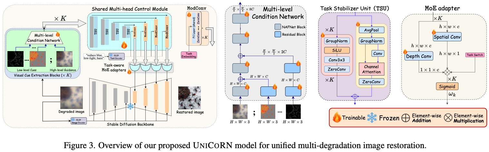
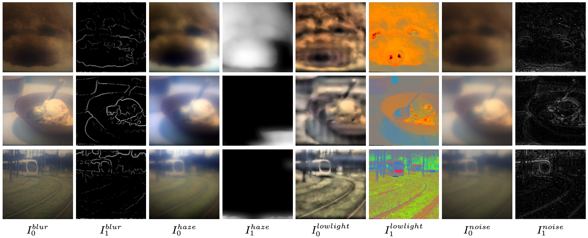
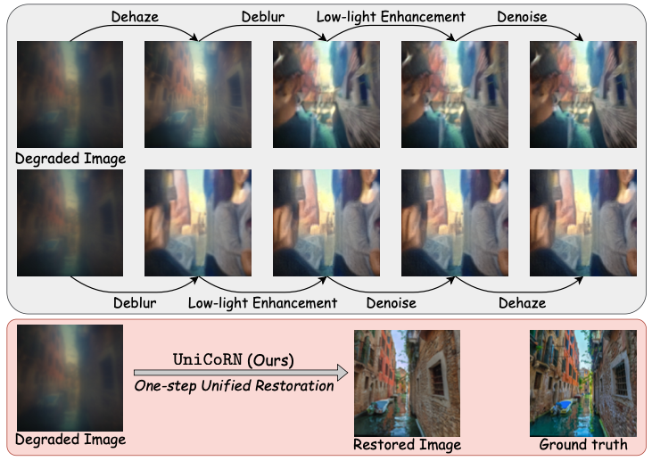
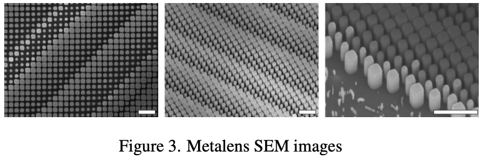
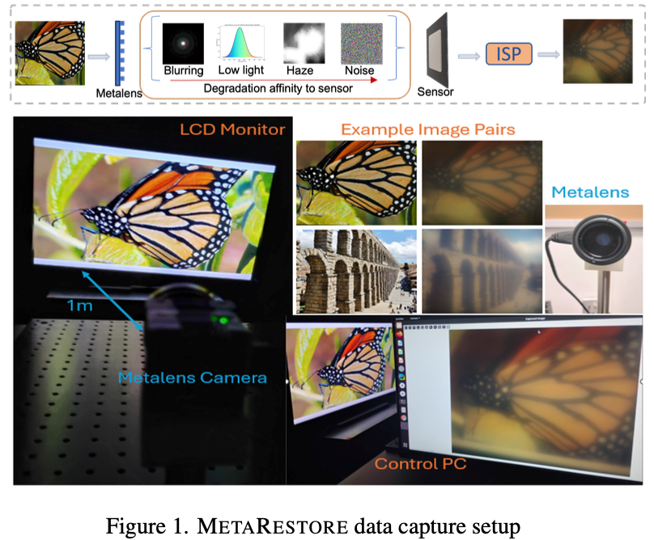
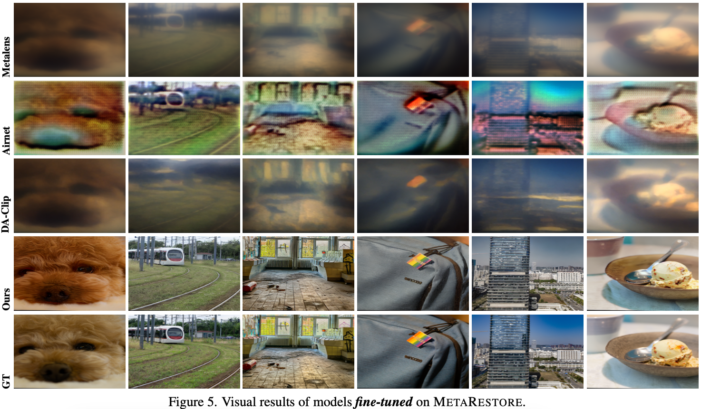
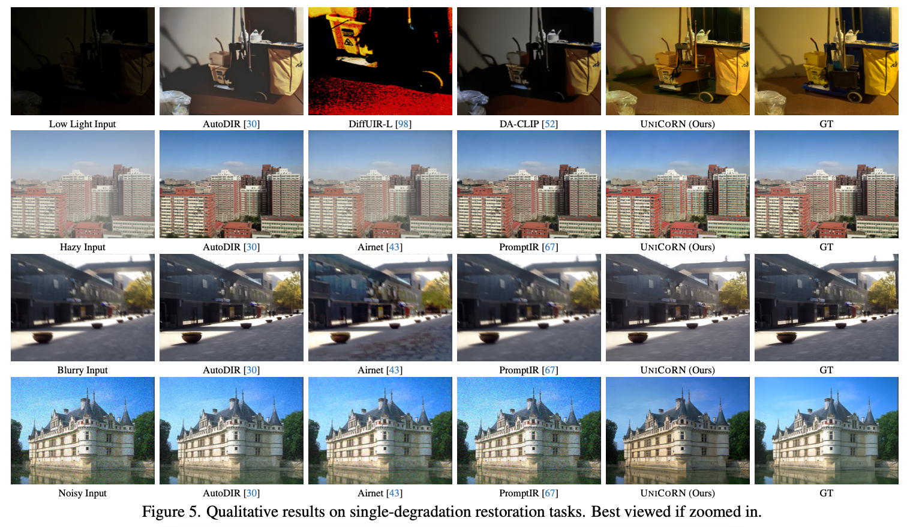

We present UniCoRN, a unified image restoration model that handles multiple simultaneous degradations — blur, haze, noise, and low-light — without requiring prior knowledge of the corruption type. Built on Stable Diffusion v1.5, it conditions a frozen diffusion backbone through a novel multi-head control network driven by cheap, task-agnostic low-level visual cues extracted directly from the degraded input.
UniCoRN features a Multi-Level Condition Network (MLCN) that fuses task-specific image estimates with secondary cues (transmission maps, edge maps, color maps) at multiple scales, a Task Stabilizer Unit (TSU) that stabilises gradient flow during curriculum training, and a Task-aware MoE Adapter that blends per-degradation control signals conditioned on CLIP text embeddings. We also introduce the MetaRestore benchmark — a real-world dataset captured with a metalens camera exhibiting compound degradations — and demonstrate 3–5× faster inference than diffusion-based baselines while matching or exceeding their quality.

UniCoRN extends ControlNet with four components: (1) a multi-branch MLCN encoder that fuses primary and secondary low-level cues at multiple spatial scales using NAFBlocks, (2) shared multi-head control paths — one per degradation type — all sharing a frozen SD1.5 UNet backbone, (3) the TSU residual block inserted between every pair of control encoder layers, and (4) a separable convolutional MoE adapter that injects blended control signals into the frozen UNet at each resolution.

Dark-channel transmission maps, shock-filtered edge maps, and colour/gradient cues serve as control signals — replacing unreliable semantic prompts and enabling the model to identify degradation type from the image itself.


SEM image of the metalens optic.

Data capture: metalens camera 1 m from an LCD display.


@article{mandal2025unicorn,
title = {UniCoRN: Latent Diffusion-based Unified Controllable Image Restoration Network across Multiple Degradations},
author = {Mandal, Debabrata and Chattopadhyay, Soumitri and Tong, Guansen and Chakravarthula, Praneeth},
journal = {arXiv preprint arXiv:2503.15868},
year = {2025}
}